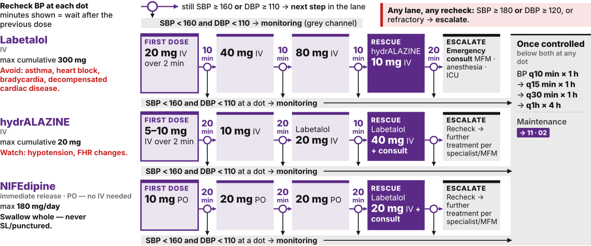

Monitor urine output, respiratory rate and deep tendon reflexes.
Respiratory rate < 12: stop magnesium → toxicity box below.
Absent reflexes: hold magnesium and check the magnesium level.
| Mg level | Therapeutic | Loss of patellar reflex | Respiratory paralysis | Cardiac arrest |
|---|---|---|---|---|
| mg/dL | 5–9 | > 9 | > 12 | > 30 |
| mEq/L | 4–7 | > 7 | > 10 | > 25 |
Exclude alternative explanations for headache, hepatic or renal findings.
Proteinuria amount is not a severe feature.
Gestational HTN with severe-range BP = preeclampsia with severe features → magnesium + antihypertensive; deliver at ≥ 34w0d after stabilization.